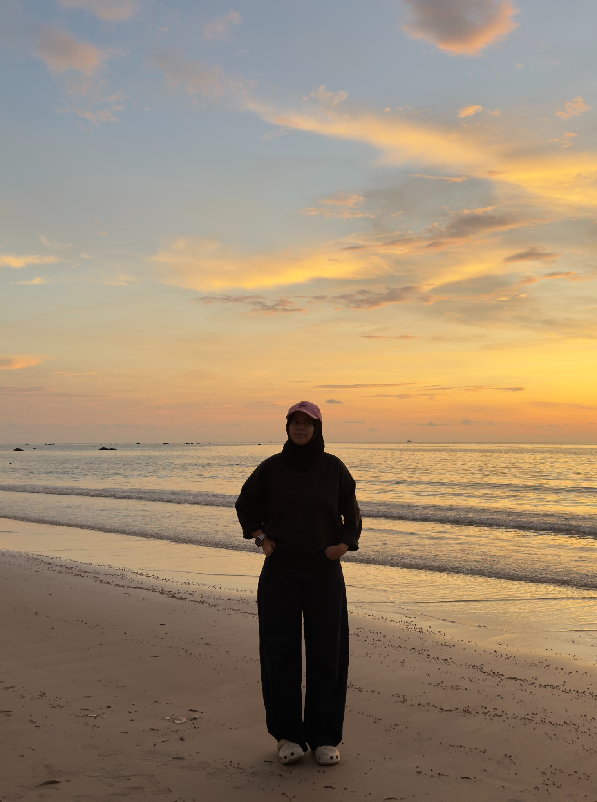

01 / GET TO KNOW ME
BEHIND THE WORK.
A little about me, my interests, and my journey as a Multimedia Technology student.

MY PHOTOHELLO THERE
I'M ATHIQAH.
Hello! I'm Athiqah, a third-year Information Technology student majoring in Multimedia Technology at Universiti Malaysia Sabah, Labuan International Campus.
I'm particularly interested in system development and exploring how technology can be used to solve everyday problems. I enjoy learning through hands-on projects and turning simple ideas into useful digital solutions.
I also enjoy exploring interactive multimedia, creative design, and new technologies. I'm still learning and improving my skills through different academic and personal projects.
NAME Siti Nur Athiqah Binti Mazian
FIELD Information Technology (Multimedia Technology)
UNIVERSITY Universiti Malaysia Sabah (Labuan)
YEAR OF STUDY Third Year
INTERESTS System Development · Multimedia · Digital Technology · Creative Design
02 / MY JOURNEY
BEYOND THE CLASSROOM.
EDUCATION
Bachelor of Information Technology with Honours (Multimedia Technology) at Universiti Malaysia Sabah, Labuan International Campus.
STUDENT INVOLVEMENT
Actively involved in entrepreneurship activities under PMFKI (Faculty of Computing and Informatics Student Association) at UMSKAL, including sales, merchandise planning, promotional activities, and student initiatives.
PROJECT EXPERIENCE
Learning through projects such as PSSphere, AdaptiveMind, E-OPR, and Augmented Reality activities.
03 / SKILLS & INTERESTS
WHAT I'M LEARNING.
CREATIVE & MULTIMEDIA
Freelance creative work including poster design, video editing, presentation slides, booklet layouts, timetables, and promotional materials.
WEB & SYSTEMS
Google Apps Script, System Development, HTML, CSS, and Basic JavaScript.
OTHER INTERESTS
Augmented Reality, 3D Modelling, Computer Graphics, Entrepreneurship, and Project Coordination.
04 / WEEKLY ROUTINE
MY TIMETABLE.
My Semester 5 class schedule at Universiti Malaysia Sabah.